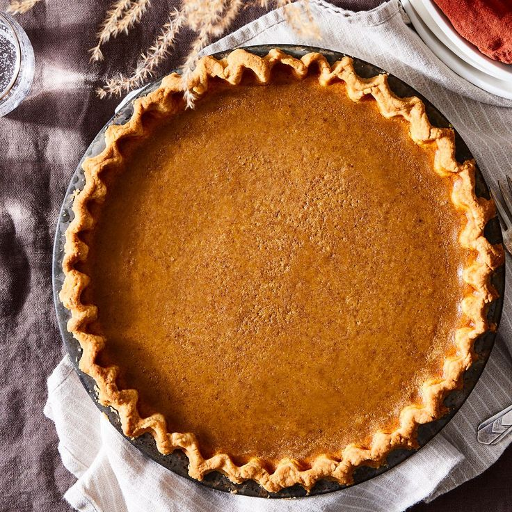

The condensed milk in this recipe gives the pie a creamy and smooth texture while the 5 spice powder gives it a kick of flavor unlike any other. This recipe will be a hit, whether it's served at your uptight in-laws Thanksgiving dinner or a relaxed Friendsgiving with your softball buddies.
Ingredients
- 1 portion pie crust
- 15 ounces pumpkin puree
- 3 egg yolks
- 1 whole egg
- 14 ounces sweetened condensed milk
- 1 tsp. cinnamon
- 1/2 tsp. ginger
- 1/2 tsp. salt
- 1/4 tsp. freshly grated nutmeg
- 1/8 tsp. Chinese 5-spice powder
Steps
- Preheat oven to 400 degrees.
- Whisk together pumpkin puree, whole egg, and yolks until smooth.
- Add rest of ingredients and whisk until thoroughly combined.
- Place pie crust in 9 inch pie plate and parbake for 15 minutes.
- When parbaking is complete add filling; lightly tap pie plate on counter to release air bubbles.
- Bake for 15 minutes.
- Reduce oven heat to 350 degrees and bake for another 30-40 minutes. Do not remove pie when you reduce the oven heat!